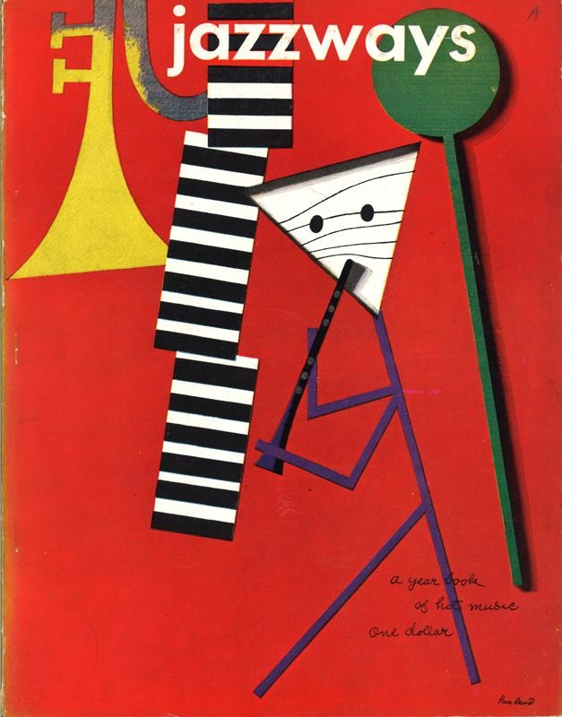
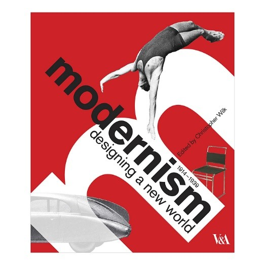
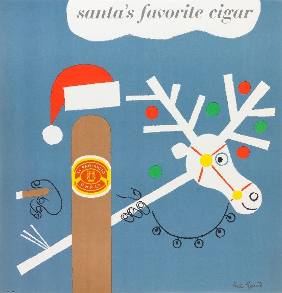
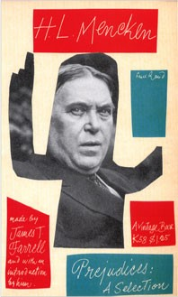
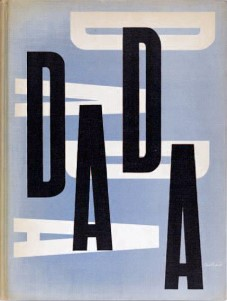

Designer Essay
Why has Paul Rand been considered as one of the legends of Graphic Design?

Paul Rand an American Graphic designer has often been acclaimed as one of the legends of Graphic Design. His career spanned over six decades where he designed posters, illustrated books, and created corporate logos. In this essay I want to discover what was so special about his work for him to be accredited the title as one of the most well-known and inspirational graphic designers of the twentieth century.
His early life shaped his pathway into following a career in graphic design. His father did not consider art to be a suitable career but Rand was determined and attended night classes to develop his skills in art. This paid off and one of his first jobs was working for ‘Apparel Arts designing magazine covers, a well-known magazine owned by ‘Esquire’. Soon his talent and flair for design attracted attention and he was considered one of the most important designers of that era. The Magazine cover ‘Jazzways’ is an example of the style of work that he created. It was hip and reflected European trends that was unique compared to what was being designed by other graphic designers.
When Paul Rand started his career as a graphic designer in his twenties for the celebrated Magazine ‘Esquire’ he was working in an era of change in the art and design world. Modernism was flourishing in America and inspired by this new theology, dramatic changes were happening in the world of communication and graphic design. Designers no longer wanted to create traditional overpowering decorative designs with flowery typeface and structured grid formulas. Modernism was the core ideology that inspired Rand, it reflected innovation and progress. He was a pioneer in that he rejected traditional methods and embraced creative ways of creating graphic art. He appreciated the work of artists such as Cezanne, Klee, Picasso, Leger, Matisse and many others. The Bauhaus style, futurism, constructivism and cubism likewise had a profound influence. Rand also absorbed the new typography theory from Switzerland. He took his creative input and drive for design from their theologies and developed and evolved his ideas and concepts from these, such as taking something .ordinary and creating something original. As Rand once commented, “the problem of the artist is to defamiliarize the ordinary’’.
He was talented, intelligent and philosophical and these personal qualities attributed to his work. Rand was one of the first graphic designers to look at European art for inspiration and use this stimulus to evolve his work, something that other graphic designers had not done before. His design ideas where original and reflected this new era of Modernism that had captivated all areas of American society.
During the 1940’s and 50’s Rands work was unlike anything that had been seen before. His poster and advertisement designs where a mash-up of montage images. Like Paul Klee, Rand liked playing around with hieroglyphs. He also used geometric shapes combined with letters, numbers and arrows that created non-realistic imagery of people and animals. By exploiting form and content through photography and typography he was able to create striking images that reflected sociable issues. This style of working gave Rand’s poster designs a simplistic look which was in form with the concepts of Modernism. A good example of this is the Coronet Brandy poster series, were he created a character with a squared-off head which could be viewed as a flat-top haircut or as a brandy snifter. In contrast to this he brought an air of fun to the cigar when he designed a series of posters for El Producto where he used a photogram technique of transforming a cigar into Santa Claus and the match into a reindeer.
Modernism was often reflected in Rands work as can be seen in these posters. Rand remarked ‘’I haven’t changed my mind about Modernism from the first day I ever did it …. It means integrity; it means honesty; it means the absence of sentimentality and the absence of nostalgia; it means simplicity; it means clarity. That’s what Modernism means to me …’’
In his advertising work Rand frequently used Futura instead of traditional fonts. His adverts were simple but eye-catching. Rand had a knack of being able to produce adverts that would draw the audience in and attract their attention. Like his advertisements his book cover designs combined shapes, colours and objects. Rand often used objects, cut papers and minimal typography, which was usually serif and sans-serif, he would even use his own handwriting. The 1958 book cover for ‘Prejudices’ is an example of Rand’s sophisticated compositions. It is a photomontage with random cut out coloured papers with handwriting. This was an unusual layout for a book cover at the time. It had more of a scrapbook appearance than a polished front cover. In another example, the book cover for ‘The Dada painters and Poets’ consists only as an arrangement of two letters, created in 1951 it was a design that was ahead of its time.
Another great example of Rand’s book design is ‘Sparkle and Spin: A book about Words’ By Ann Rand. A children’s book written by his wife, it demonstrates the essence of Rand’s creativity. This book design is a celebration of simplistic imagery with everything skilfuly placed to perfection. It is a combination of bold pictures and words which is combined in a fun and childlike way.

An important moment in Rand’s career was when he met Hungarian Bauhaus artist Moholy-Nagy he asked Rand if he read art criticism. It was at this point that Rand decided to learn more about Art criticism and philosophy and this influenced the perception of his work especially the design work that he did for logos. He said ‘’a logo derives meaning from the quality of the thing it symbolizes, not the other way around’’
It has been this ideology that Rand used since then for his design work which probably significantly impacted on how his own work progressed. Alongside his vast portfolio of advertisements, posters and book covers, Rand was probably best known for reinventing the corporate logos for some of the largest companies in America such as Next computer, ABC American Broadcasting Corporation, UPS parcel service, Westington Electric Company and most famously IBM Computer Company.

Employed by IBM as a design consultant he created different logos for the company but was continually reinventing them. Randy Golden, a former senior programme manager for IBM describes Rand as the father of graphic design in IBM. Unlike other graphic designers of the time, he thought in a rational but different way. Form, simplicity and balance played an integral part in his designs and his work reflected a sense fun and humour. He too commented that Rand had a different type of approach with his client unlike other graphic designers. He did not give them design options he would tell them his choice and expect them to run with it. This quality of self-assertiveness was another factor that made him successful as a graphic designer.
Then in 1972 he created the horizontal striped logo. He commented that this helped to give the logo a sense of speed and dynamism. In his IBM Rebus design, Rand was again being playful with the logo. This piece reflects how Rand was able to turn a company logo into a piece of art. He wanted to show the fun side of IBM and also the industrialist side. It was created in 1981 to support IBM’s motto, THINK.

Rand was considered one of the most famous designers of his generation and we can still see his influence to-day, in company logos such as Apple
Rand was not only a talented craftsman but he was also a good businessman. He was able to communicate effectively with his clients and believed in the importance of presenting design work to a client. He felt it was important to present an idea verbally and not only visually. Rand’s client’s presentations usually involved custom made booklets which helped sell the design. He believed that a graphic designer must tell a unique story that is tailored to the client’s brief. He commented “How to present a new idea is, perhaps, one of the designer’s most difficult tasks. Everything a designer does involves presentation of some kind–not only how to explain (present) a particular design to an interested listener (client, reader, spectator), but how the design may explain itself in the marketplace…”
Paul Rand was a man with great intellect and philosophical insight. He was not only a graphic designer but in later in his career a writer and a teacher. He has written many books expressing his thoughts on design. All of this leaves him with a huge legacy. His portfolio of work over the decades is fundamental to the accreditation that he has achieved from many admirers over the years, so it is understandable as people see him as a legend in this genre.
Graphic designer Yusaku kamekura [1992] states that his ‘urbane and stylish ideas, his sophisticated messages, and his bright and witty humour all symbolized the essence of American culture
From this investigation I come to realise the power and influence of Paul Rand. He reinvented the graphic design industry in the 1950’s with his innovative and simplistic designs and his influence can still be seen in graphic design to-day.